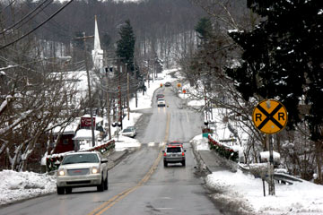
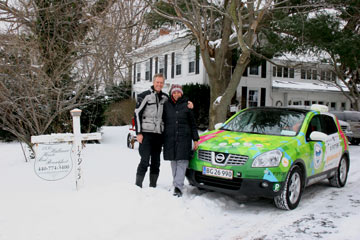
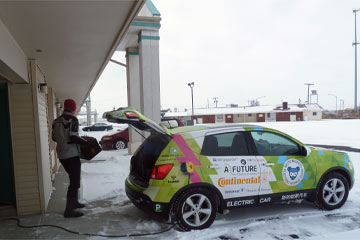
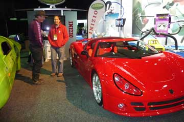
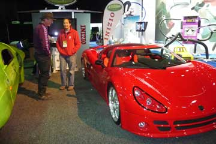
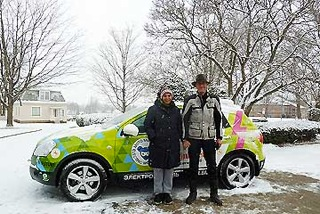
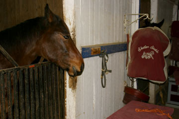
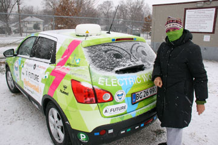

When we left the historic B&B I had put on angora-socks and leg-warmers made by old socks. On the floor of the car I put a rolled-up camping-mattress and inside a dawn-jacket and a fleece-jacket I had two bottles of hot water. When I put my feet down there they kept warm - almost. At lunch time we tramped through piles of snow on the side-walk-free roads to get to a thrift-store and a diner. I discovered there were holes in my shoes and my socks got wet. In the evening we were lucky to get a good room in one of the small Indian-run motels in Sharon, Pennsylvania. Green Car got its own plug on the outside of the building so we had heat in our room in the frosty night. Good for my creaking cough and Hjalte´s icy toes.
Nina

Coocooned in our dawn sleeping bags we lay waiting for the morning to come. Six o'clock Hjalte got up and stirred the motel-host and she flipped the circuit-breaker on so Green Car could charge again. It froze hard and one of the battery-cells was under 32F/0 C. Breakfast in the deep-frozen room had to be what we got in our food-box: Oats with a little honey and hot Nescafe poured over. Actually OK! In these low temperatures Green Car do not go so far. In minus 10 C not more than 1,2 km/ % charge. Luckily we found a company in Clyde repairing RVs with a 220V outlet. Green Car got new power and we had lunch in a chain-restaurant and finally our feet thawed. In the evening we came to a hotel in Oberlin, Ohio where there was no 220V outlet. We then had to go to a Bed & Breakfast on the very last drop of electrons. Much anxiety, but it all ended well with Green Car in a garage with power from a clothes dryer and a fine warm room with an antique bed for us. And a great history: the house was built in 1830 and became a a "station on the underground railroad" where run-away slaves was hidden until they could escape to Canada. We even saw the secret room under the floor where they had to wait.
Nina and Hjalte


A TV-team from NBC-Sport filmed us and Green Car! With a little luck they do a one minute story about us in their big reportage from the 2011 Detroit Auto Show to be aired on Jan 30, 12:30. When it was over and Green Car was fully charged we got a warm farewell from our friends and hosts Linda and Bruce. Snow was falling as we left through dismal dark Detroit. To save energy we drove without heat in the car. A sunset never tWe disconnected the heater in the room and plugged in Green Car with the cord running out through the slightly open door. o end put the horizon on fire behind the winter-dark landscape. When Green Car was running out of power we had no motel nearby. So quite contrary to our principles we had to back-track 20 km and just made it across empty frozen back-roads. I had an old bit of bread and some almonds for dinner. And during the night happened what shouldn't happen: the motel circuit breaker flipped while we slept and Green Car was without power in minus 9 C.
Nina


The North American International Auto Show gave us a lot of exposure - thank you guys! It was great to share our adventure with you and the audience at our press conference. The pictures from the Gobi desert gave an idea of what we have been through and what our Green Car has braved. At the Venturi-stand we met Xavier Chevrin who went from Shanghai to Paris with his wife Géraldine Gabin in a Citroen EV . EV-expeditions create modern day adventures. We hope to meet them in Monaco in April at the Monte Carlo Rally for Electric Cars. Michigan gave us a taste of snowstorm when we drove back home to our dear hosts Bruce and Linda from the Electro Auto Association in Saline. You can check out some of the press-coverage we got here:
Detroit Free Press: http://www.freep.com/article/20110112/BUSINESS01/101120373/-1/BLOG14/x26template/x3drss/x26mime/x3dxml/Around-world-in-11-months-for-Danish-Moto-Mundo-duo
WOMC Radio: http://womc.radio.com/tag/moto-mundo/
SATnews Daily: http://www.satnews.com/cgi-bin/story.cgi?number=1714272154
AutoBlog Green: http://green.autoblog.com/2010/12/21/moto-mundos-nissan-qashqai-electric-detroit-auto-show/
NextCars.net: http://www.nextcars.net/moto-mundos-nissan-qashqai-electric-travels-around-the-world-to-visit-detroit-auto-show/
Engadget: http://www.engadget.com/2010/12/23/moto-mundo-world-tour-pushes-all-electric-nissan-qashqai-to-its/
 

A whole day at the Detroit Auto Show. In the morning we let a number of people take Green Car on a little test-drive on the track in the basement. Upstairs in the big hall all the major auto-manufacturers exhibited electric car and hybrids. They were the big news this year and some of the cars are already on the market. The cars shined in the lamplight and looked wonderful and seductive in their gloss and shiny leather. One of Hjalte´s favorites was the new electric Ford Focus while I was more inclined to go for the new Tesla. BYD, Mercedes, Smart, Honda, Audi, VW and many more were on the move with electric cars. All things considered Green Car is still up in front with long range, good space and convenience. And actually driven kilometers! The early adapters among the car-buyers are now catching on, while the majority still waits for mass-production to improve batteries and bring down the price of EVs. It is very important that many different electric cars get on the market and on the roads. The long and necessary evolution and perfection of the electric car needs the experiences from thousands and millions of drivers.
Nina and Hjalte


In pure frost og bright sun I, Green Car, drive the last miles to Detroit, the Motor City. Happy and proud I pause in front of the gates to the North American International Auto Show - I made it all the long way round on time. Skyscraper high billboards advertise the new models. I'm taken inside and parked right between all the new electric cars in the Michigan Hall in the enormous COBO-center. Hectic activity, workers, electricians, producers. A man polishes me, a charge-point is attached and tomorrow I will take journalists on a test drive on the electric test track here on the lower floor.
Many greetings from Green Car


Bruce and Linda drove with us the 40 miles into Detroit in their hybrid Ford-Ranger. The Auto Show opened the doors for Green Car. The giant exhibition was to open next day and workers were busy with last minute preparations. Again this year the exiting news were electric. Nearly all the big automakers presented electric cars from super sports cars to Minis. One of the most attractive was the new Tesla, its shining body floating over the floor and the tough electric drivetrain. On the way home we saw more of Detroit, one of the US cities worst hit by decay and unemployment. Ruins and empty lots encircling a small core of skyscrapers. In the morning Bruce, a retired Ford-man responsible for buildings and environment, had been on a panel about new green jobs for Michigan. But we are very late, he said. Linda had been working at the University library in Ann Arbor outside Detroit. Bruce and Linda took us to a nice micro-brewery and restaurant in Ann Arbor, a very relaxed town full of students and pedestrians.
Nina og Hjalte

In the morning everything was covered by a thick layer of snow, blinking and sparkling in -9 C. We left Waterloo equipped with hot coffee and an ice-cleaner. Soon we could tell that Green Car was driving OK, but not much more than 1,2 km / % charge, so we had a lunch-charge at a RV-repair shop in Coldwater. We then drove on, still without heat in the car to make it to Saline on the old Chicago-road towards Detroit. In Saline Linda from the Electro Auto Ass. had seen Green Car moving closer on our web-site, so she was out on the street as we turned around the corner and greeted us! Her husband Bruce got home and at once put Green Car to charge in their garage. We came into an old wooden house with a warm fireplace. Wonderful! An hour later we drove a few blocks into town and had a fine diner with the Electric people. Some had hybrids or self-made electric conversions and a man even had a running electric car from 1916!
Nina


Snow was in the air over Peru. We called from the car on our indispensable satellite-phone and made sure there was a room for us at a hotel we had found on the net. But when we arrived at the address in Waterloo late in the afternoon the name had changed to Maple Leaf Bed and Breakfast. And nobody was at home. We called again and found the surprised hosts promising to be home in an hour. We buttoned up our coats and went for a walk in the little town. At the railroad crossing the trains blasted by in the whirling snow with long, sad whistles. On the main street people found refuge from the weather in the local bar. We returned to the house and now the hosts had come home. We had ended up in another town - luckily - because the house was a fairytale of old things and they let us wire in Green Car to their pool-heater. The house was still full of Santas and fancy Christmas-trees in every room.
Nina and Hjalte

There were no RV-parks nearby. While we thawed in a coffee-bar I searched the net. Indianapolis State Fair should have hook-ups. If we had not called we would have thought all was closed when we came there. But on the deserted parking lot there were actually live 220V outlets. Snow began to fall while we charged. On the vast fair-grounds we saw the trotting track and in the old stables we met Dan Statler and his great race-horses. We also saw icehockey-training. When we rolled up the cord it froze 6 degrees C and the freeway going north had been closed. In the town of Peru we had to stop and found a small Veteran-owned motel. I disconnected the heater and got Green Car hooked up to only 220 V. Nina and I crawled deep down in our sleeping bags.
Hjalte